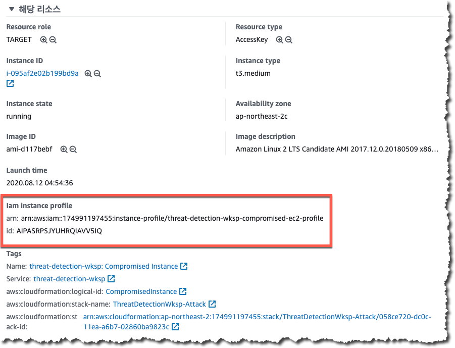
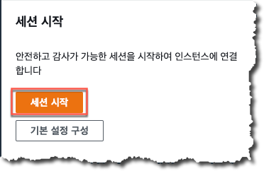

자격증명 침해
이번에는 이전 과정을 통해 실행된 공격을 AWS 보안 서비스를 이용하여 탐지하고 분석하는 내용을 다뤄보도록 하겠습니다.
소요 시간
- 침해된 AWS IAM 자격증명 – 25~40 분
- 침해된 EC2 Instance - 25~40 분
- 침해된 S3 버킷 - 15~25 분
이번 실습에서 실행된 공격은 여러분의 설정 실수나 관리 오류로 인하여 공격자가 웹서버의 접근 권한을 획득한 경우를 가정하고 있습니다. 여러분의 자격증명이나 EC2 인스턴스에 대한 접근 권한을 소유하고 있는 공격자가 발생한 다양한 악의적인 행위들은 여러분들이 활성화한 AWS 보안 서비스를 통하여 탐지되게 되며 여러분이 설정하였던 CloudWatch 이벤트 규칙이나 SNS 등을 통하여 경보를 수신할 수 있습니다.이런 경보들은 의심스러운 IP 주소와의 통신, 계정 정보 탈취를 위한 정찰활동, S3 버킷의 설정 변경등과 같은 내용을 담고 있습니다. 여러분들은 이러한 경보나 로그 등을 통하여 여러분들의 AWS 환경에 침입을 시도하는 침입자들의 접근 시도를 파악하고 해당 시도 차단을 위한 적절한 조치를 수행하여야하며 잘못된 설정이 있다면 해당 설정을 적절하여 수정하여 보다 안전한 AWS 운영환경을 구성하셔야 합니다.
공격에 사용된 CloudFormation 실행 완료 후 이메일로 탐지 알람이 오기까지는 공격 패턴에 따라 15분 이상이 소요됩니다. 이전 과정들이 모두 정상적으로 완료되었다면 공격 알람 메일을 수신하는데 시간이 필요할 수 있으니 조금 기다려 주시기 바랍니다.
1 - 침해된 AWS IAM 자격 증명
탐지 및 분석 준비
여러분들인 첫번째 CloudFormation 에서 등록한 E-mail 로 여러가지 공격 탐지 경보 메일이 수신되고 있을것입니다. 여러가지 공격 탐지 경보 메일 중 AWS IAM Principal 과 관련한 경보 메일을 선택합니다.
아래의 탐지 내역을 포함하고 있는 경보 메일을 선택합니다.
Amazon GuardDuty Finding : Recon:IAMUser/MaliciousIPCaller.Custom
메일 본문에 있는
를 복사합니다.
GuardDuty 에서 해당 Access Key 와 관련되어 있는 탐지 내역 분류
여러분들은 GuardDuty 에서 무엇인가를 탐지하여 경보를 발송했다는 것을 알게되었습니다. 이제 여러분들은 해당 경보와 관련한 보다 자세한 사항을 확인하기 위하여 GuardDuty 에 접속한 후 탐지되어 있ㅇ는 다양한 내역 중에서 해당 Access Key 와 관련된 내역만을 선별적으로 분류하는 작업을 하도록 하겠습니다.
- GuardDuty Console 화면으로 접속합니다.
- 이벤트 필터를 추가하기 위해서 “필터 추가” 라는 문구가 음영 처리되어 있는 검색창을 클릭합니다. 검색창을 클릭하면 사용 가능한 필터 리스트가 나타납니다.
- 사용 가능한 필터 리스트에서 “액세스 키 ID” 를 선택한 후 이전 과정에서 복사해두었던 액세스 키를 입력한 후 “적용” 버튼을 클릭합니다.
- 필터를 적용한 후 아래와 같이 특정 액세스 키와 관련한 탐지 내역만 별도로 필터링 되어 나타나는 것을 확인합니다. 각각의 탐지 내역을 클릭하여 상세 내역을 확인하도록 합니다.
- 탐지 상세 내역 정보 중 “해당 리소스” 부분에서 “User Type” 정보를 확인합니다.

User Type 이 “AssumedRole” 로 되어 있는데 이것은 무엇을 의미할까요? 침해 유형을 분석할 때 User Type 을 확인하고 해당 Type 을 기반으로해서 분석과 대응 방안을 수립하는 것은 아주 중요합니다.
- 탐지 상세 내역 정보 중 “해당 리소스” 부분에서 “Principal ID” 정보를 확인합니다.
Principal ID 부분의 정보는 콜론(:)으로 구분되어 있는 IAM Role 에 대한 고유값과 EC2 Instance ID 의 값의 형태입니다.
예) AROA4M5UW2CWQQ6NXGLUI:i-0cd129013ab8d13cd
Principal ID 는 API 호출에 사용되는 고유값을 포함하고 있습니다. 임시 보안 자격증명을 통해 API 호출이 발생하는 경우 Principal ID 는 session 명도 포함을 하고 있는데 이 탐지 내역의 경우 EC2 에 대한 IAM 역할을 이용해서 호출이 이뤄졌기 때문에 session 명으로 EC2 Instancd ID 가 사용되었습니다. - Principal ID 의 값을 복사합니다.
- “해당 리소스” 부분에서 “User Name” 을 확인한 후 그 값을 복사합니다. 이 값은 EC2 인스턴스에 할당되어 있던 IAM Role 의 이름으로 실제로 API 호출에 사용된 IAM Role 의 이름입니다.
대응
자 이제 여러분은 공격자가 공격에 사용한 EC2 인스턴스의 Role 과 공격자가 사용한 임시 보안 자격증명이 무엇인지 알아내었습니다. 이번에는 공격자가 해당 임시 보안 자격증명을 더이상 사용하지 못하도록 대응 조치를 수행하도록 하겠습니다.
IAM Role 세션 종료
- AWS IAM Console 로 접속합니다.
- 좌측의 메뉴에서 “역할”을 클릭합니다.
- 검색창에 조금전 복사해두었던 “User Name” 값을 붙여넣습니다.

- 요약화면에서 “세션 취소” 탭을 클릭한 후 붉은 버튼으로 되어있는 “활성 세션 취소” 를 클릭합니다.
확인창이 뜨면 체크박스를 체크한 후 “활성 세션 취소” 를 클릭합니다.
이제 공격자가 최초에 사용하였던 IAM Role 과 관련한 활성 세션은 모두 취소가 되었습니다. 즉, 공격자는 더이상 최초 세션을 이용하여 악의적인 행위를 수행할 수 없습니다. 하지만 새로운 활성 세션은 여전히 만들어 낼 수 있을 것입니다. 그럼 이번에는 무엇을 하여야할까요?
EC2 인스턴스의 Access Key 변경
이전 과정에서 진행한 “활성 세션 취소” 작업으로 인해 공격자가 사용하던 모든 활성 세션은 이용이 불가능해졌습니다. 하지만 이렇게 특정 IAM Role 에 대한 활성 세션을 취소하게 되면 해당 Role 을 사용하는 정상적인 어플리케이션 조차도 해당 활성 세션에서 사용하던 Access Key 를 사용할 수 없게 됩니다. 여러분들은 이런 작업이 서비스 측면에서는 영향도가 크지만 공격자로 인해 발생할 수 있는 리스크를 감안한다면 적절한 대응 조치를 확보한 상태에서 수행하셔야 합니다. 여러분들의 어플리케이션들이 사용할 새로운 Access Key 를 확보하기 위해서는 여러분들의 EC2 인스턴스를 중지/재시작 하는 작업이 필요합니다. 단순하게 “재부팅” 하는 것으로는 Access Key 가 변경되지 않습니다. 여러분들이 사용하시던 Access Key 의 만료시점이 가깝거나 만료 시간이 짧은 경우라면 새롭게 발급되는 Access Key 생성 시점까지 기다리는 것도 옵션이 될 수 있지만 빠른 재발급을 원한다면 중지/재시작이 반드시 필요합니다. 이 실습에서는 AWS Systems Manager 를 관리용으로 사용하고 있기 때문에 여러분들은 Systems Manager 에서 제공하는 Session Manager 를 통해 간단하게 EC2 인스턴스에 접속한 후 Access Key 가 재발급되는 것을 확인하실 수 있습니다.
- EC2 Console 에 접속합니다.
- threat-detection-wksp: Compromised Instance 라는 이름의 인스턴스를 선택한 후 “중지” 를 클릭합니다.
- EC2 인스턴스 상태가 “Stopped” 되어 있는 것을 확인한 후 “시작” 을 클릭합니다.
Access Key 변경 확인
- AWS Systems Manager Console 에 접속합니다.
- 좌측 화면에서 “Session Manager” 를 선택합니다.
- 우측 화면에서 “세션 시작” 버튼을 클릭한 후 threat-detection-wksp: Compromised Instance 라는 이름의 인스턴스를 선택한 후 “세션 시작” 을 클릭합니다. 
세션이 시작되면 프롬프트 창에 아래의 CURL 명령어를 입력합니다.
curl http://169.254.169.254/latest/meta-data/iam/security-credentials/threat-detection-wksp-compromised-ec2위의 CURL 명령은 EC2 인스턴스에 연결되어 있는 메타데이터 중 임시 자격 증명 정보를 호출하는 URL 입니다.
- 아래와 같은 CURL 명령에 대한 응답 중 AccesskeyId 값을 확인하여 이전 과정에서 적어두었던(활성 세션 취소 전에 적어두었던) Access Key 와 다른 것을 확인합니다.